Introduction
Large language models (LLMs) are all the buzz these days. From big corporations like Microsoft enhancing their office products to Snapchat having an assistant for entertainment, to high schoolers trying to cheat their assignments. Everyone is trying to incorporate LLMs into their products, services, and workflow.
With the surge in popularity, there’s a flurry of discussions, blogs, and news articles about fine-tuning these models and their myriad applications. Even if you’ve dipped your toes into the LLM pool, you might find yourself stumbling upon unfamiliar terms and concepts.
In this three-part blog series, we’ll map out all the key concepts related to LLMs, so you can finally understand what your ML enthusiast colleague is talking about, but also potentially incorporate these powerful models into your projects. So, buckle up, and let’s dive into the fascinating world of Large Language Models!
Prior Knowledge
Before we dive deeper into the key LLM concepts, it’s helpful to cover some foundational background knowledge. This will ensure we’re all on the same page as we explore the intricacies of LLMs.
Tokens
Let’s start with a simple question: how would you split a sentence into words? Seems straightforward, right? But what if the sentence uses contractions like “can’t” or “I’m”? And what if we switch to a different language, say, Swedish or Polish? Would you split it the same way?
This is where the concept of “tokenization” comes into play. It’s all about splitting text into smaller, discrete units (or “tokens”), preferably, in a reversible way. This provides a neat, organized way for our models to process the text.
One of the key properties of tokens is that they belong to a fixed-size set, aptly named the “vocabulary”. This makes them much easier to work with mathematically. Each token can be represented by its unique ID in the set or as a one-hot vector.
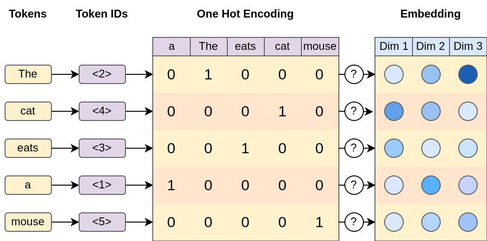
The document is tokenized and one-hot encoded producing a fixed-size matrix of vectors. These vectors are fed through a function that transforms them into embeddings, effectively reducing the dimensionalityIn the olden days, tokenizers were quite lossy. It was common to work on stemmed words and only consider a set of the most common words. Modern tokenizers, instead, have evolved to focus on efficiency and losslessness. Instead of encoding whole words, algorithms such as Byte Pair Encoding (BPE) take a compression-like approach by breaking words apart.
Vocabulary construction is done in a purely data-driven manner, resulting in token splits that make sense semantically, such as the common verb ending “-ing”. Words like “working”, “eating”, and “learning” all share this ending, thus an efficient encoding is to give “-ing” its own token. Some splits don’t make sense, producing semantically dissimilar tokens such as “lab-elling” which requires the model to do more work to infer its true meaning.
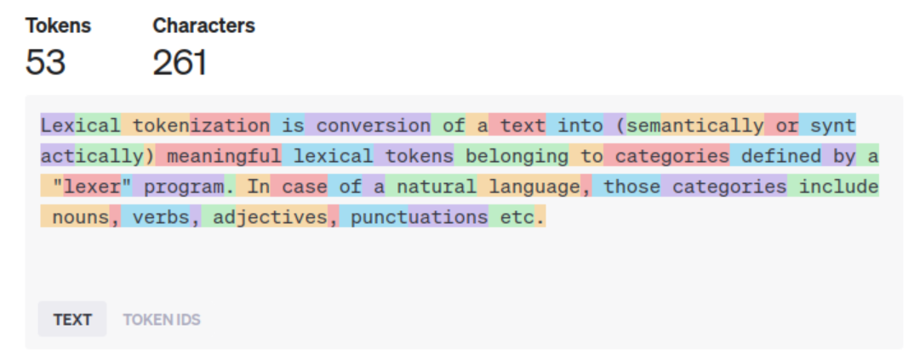
OpenAI’scl100k_base tokenizer encoding a sentence. In this case, 100k refers to its vocabulary size.
But what if a word doesn’t exist in the vocabulary? Like “w0rk1ng”? In this case, the tokenizer breaks it down into smaller chunks, sometimes even character by character.
Now, it’s tempting to assume that a token corresponds to a word. And while that’s often the case, it’s not a hard and fast rule. For simplicity’s sake, we’ll often use the terms “word” and “token” interchangeably in this series. But remember, in the wild world of tokenization, a token could be anything from a whole word to a single character or a common word part.
For ballpark estimates of token count, you can multiply your word count by 1.25 (assuming English text). This gives a reasonable approximation of the number of tokens in a given piece of text. However, if you’re looking for a more precise estimate, you can use the OpenAI tokenizer web tool.
Token Embeddings
Now that we’ve got our tokens, we need a way to represent them that captures more than just their identity. We’ve seen that tokens can be represented as one-hot vectors, which are great for basic math but not so helpful when it comes to comparing different words together. They don’t capture the nuances of language, like how “cat” and “dog” are more similar to each other than “cat” and “car”.
Enter the concept of “token embeddings”, also known as “word vectors”. The seminal paper Word2Vec was instrumental in bringing this concept to the mainstream. The authors built on two key assumptions from prior work:
- Similar words occur in the same context (a concept known as Distributional Semantics).
- Similar words have similar meanings.
It’s important to note that these two assumptions are distinct. The first is about the context in which words are used, while the second is about the meanings of the words themselves.
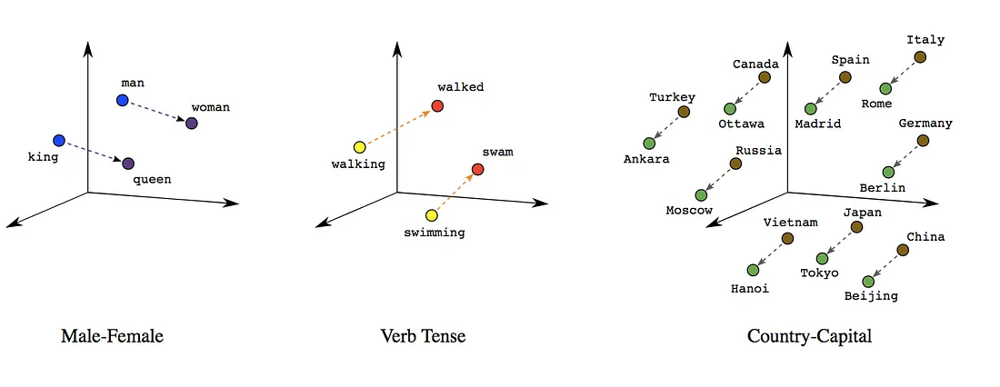
Demonstration of Linear Relationships Between Words Visualized in Two Dimensional Space. Image from Google BlogAt first glance, “similarity” might seem like a subjective concept. But what if we think of words as high-dimensional vectors? Suddenly, similarity becomes a very concrete concept. It could be the L2 distance between vectors, the cosine similarity, the dot product similarity, and so on.
In the Word2Vec paper, the authors used gradient descent techniques to find embeddings for each word. The goal was to ensure that the above assumptions hold true when comparing these embeddings. In other words, they wanted to find a way to represent words as vectors in a high-dimensional space such that similar words (in terms of context and meaning) are close together in that space.
This was a game-changer in the field of natural language processing. Suddenly, we had a way to capture the richness and complexity of language in a mathematical form that machines could understand and work with.
But the real beauty of these embeddings is that they can capture relationships between words. For example, the vector difference between “king” and “queen” is similar to the difference between “man” and “woman”. This suggests that the embeddings have learned something about the concept of gender.
However, it’s important to remember that these embeddings are not perfect. They are learned from data, and as such, they can reflect and perpetuate the biases present in that data. This is an important consideration when using these embeddings in real-world applications.
Encoders and Decoders
While methods like Word2Vec are great for creating simple word embeddings, they produce what we call “shallow embeddings”. In this context, shallow means that a matrix of weights is trained directly, and thus can be used like a dictionary. As such, the number of possible embeddings is equal to the number of tokens in your vocabulary. This works fine when you’re dealing with individual words, but it starts to break down when you’re working with sentences or whole documents.
Why? Well, if you encode all the tokens in a sentence into embeddings, you lose all the order of the words. And as anyone who’s ever played a game of “Mad Libs” knows, word order is crucial when it comes to making sense of a sentence. By losing the order, you also lose the context, which can drastically change the meaning of a word.
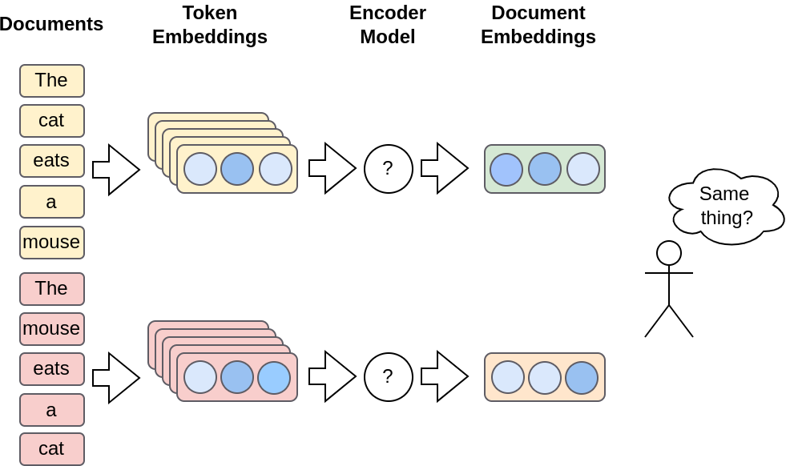
The encoder produces a document embedding by combining the individual word embeddingsTo overcome this limitation, we need an additional model, the “Encoder”, which does some neural net math magic to create an embedding that takes both context and order into account.
On the other side of the equation, we have the “Decoder”. Its job is to produce a token from the input, which is typically a latent vector.
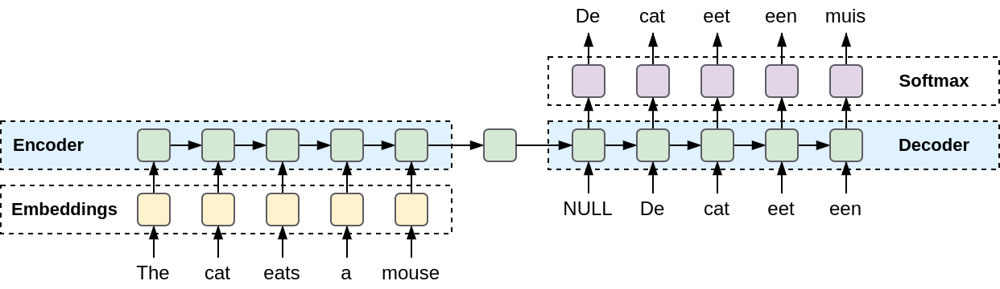
Visualization of a encoding a sequence of tokens embeddings into a single latent representation, and decoding it into a sequence of token probabilities.The architecture of how Encoders and Decoders work can vary greatly. It can be based on Transformers, LSTMs, or a combination of both. We’ll dive deeper into these architectures in a later blog.
One interesting thing to keep in mind is that, since encoders and decoders operate in latent space, their input is not limited to text. They can also take embeddings produced from images, audio, and other modalities. This is thanks to innovations like CLIP, which are trained on multimodal tasks by introducing an encoder for each data type.
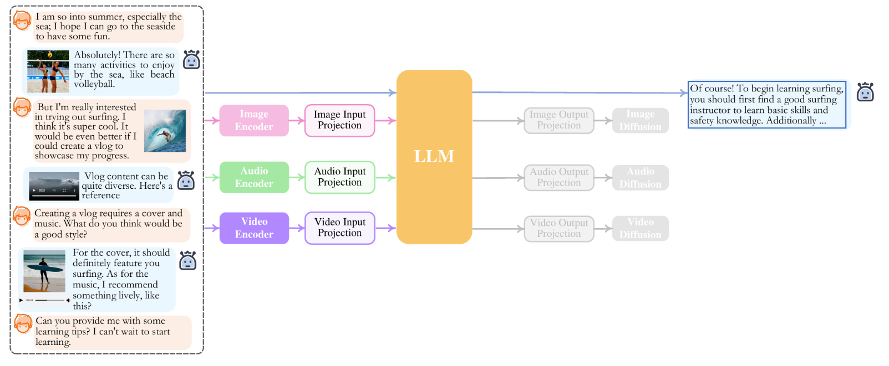
Inference process on NExT-GPT with text, image, audio, and video modalities.Modeling Methods
The architecture of large language models isn’t the only factor that gives them an edge. How they model natural language processing tasks also contributes greatly to their performance. Rather than taking a one-size-fits-all approach, large language models specialize in different modeling methods optimized for certain tasks.
Causal Language Models (CLM)
Causal Language Models (CLMs) are trained with an autoregressive objective, which is a fancy way of saying they’re trained to predict the next token in a sequence based solely on the previous tokens.
CLMs typically work in an unidirectional manner, meaning the next token depends only on the previous tokens. It’s a bit like reading a book – you don’t know what’s coming next until you’ve read what’s come before. Their architecture reflects this, as CLMs are typically decoder-only.
Because of their autoregressive nature, CLMs are great for tasks like text (and code) completion, chat, and story writing. Examples of CLMs include Generalized Pretrained Transformer (GPT), and its derivatives, such as Meta’s Llama.
Masked Language Models (MLM)
On the other hand, Masked Language Models (MLMs) are trained to predict masked tokens in a given input by randomly masking certain tokens during training. Its objective task is to “fill in the blanks” given a sentence, but complementary tasks are also used, like predicting which token has been replaced.
Unlike CLMs, MLMs typically use a bidirectional architecture, meaning they use the context on both sides of a word. This gives them a broader perspective and generally leads to a better understanding of the relationships between words.
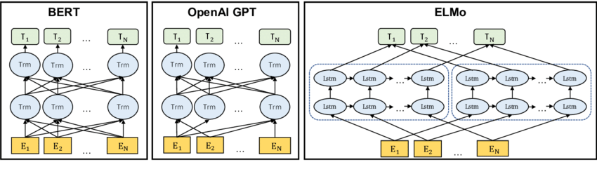
Differences between attention direction. BERT uses a bi-directional Transformer. OpenAI GPT uses a unidirectional left-to-right TransformerMLMs are particularly suitable for tasks like text classification, sentiment analysis, and text tagging. Semantic search is driven by LLMs, where the mathematical distance between document embeddings us used as distance. However, they don’t add much value for incremental token prediction tasks because of their bidirectional nature. Nor can they fill in an arbitrary amount of words.
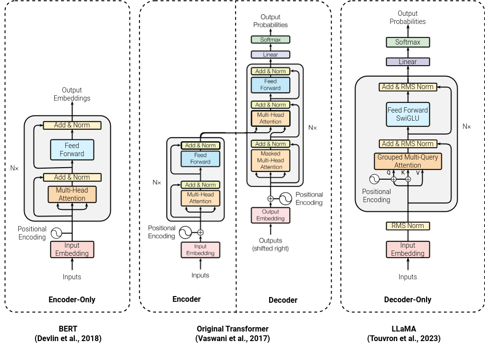
Comparison between architectures of influential models from different modelling methods. (from left to right) BERT is an MLM, Original Transformer is a Seq2Seq model, and LLaMA is a CLM.BERT (Bidirectional Encoder Representations from Transformers) model is highly effective in document embedding. Both BERT and ELMo (Embeddings from Language Models) have been instrumental in advancing the field of natural language processing and continue to be widely used in a variety of applications.
Sequence-to-Sequence Models (Seq2Seq)
The Sequence-to-Sequence models (Seq2Seq) aim to transform an input sequence (source) into a new one (target), and both sequences can be of arbitrary lengths. Intuitively, it works like translating a sentence from one language to another – the input and output sentences don’t have to be the same length, but they do relate to one another.
Seq2Seq models are typically composed of an encoder-decoder architecture, which can be based on Transformers or Recursive Neural Networks (RNNs). The encoder processes the input sequence and compresses it into a latent representation, and the decoder then generates the output sequence from this representation. It is a common sentiment that RNN-based models, while being more expensive (and poorly parallelizable)32, are better than transformer-only models. Thus, various works such as RWKV try to combine the best of both worlds to create hybrid models.
These models can generally generate coherent, much larger output based on input, making them suitable for tasks like summarization, translation, and question answering.
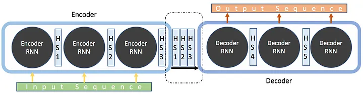
Visualization of encoding and decoding flow of an Seq2Seq model.A popular example of a Seq2Seq model is T5 (Text-to-Text Transfer Transformer) which during training frames all NLP tasks (such as translation, classification, summarization, and more) into text-to-text problems. Doing so, allows it to learn patterns useful for a variety of tasks. Another popular example is BART (Bidirectional and Auto-Regressive Transformers) which is pre-trained by corrupting text and forcing it to reconstruct the original, which improves its text comprehension. These models have shown impressive results on a wide range of tasks, with only a fraction of parameters they can outperform CLMs on various tasks.
The Current State-of-the-Art
In the current landscape of large language models (LLM), transformer-based architectures largely steal the limelight. If you are already wondering what’s working under the hood, we’re planning on taking a deeper dive into their components in the next blog.
The ever-growing families of models and variants for architectures like GPT or BERT would cause anyone a headache to keep up. Besides the model architecture and modeling methods we have the label of foundational models to help us further organize our taxonomy. The foundational models are the Swiss army knives of AI models. Unlike conventional AI systems, they are trained broadly to be adapted to a variety of tasks with minimal labeled data. The core idea is that if you need more performance at a specialized task, you can start fine-tuning from a solid basis and not from scratch.
There are now many commercial and open-source options available for Causal Language Models (CLMs). Notable commercial CLMs include OpenAI’s GPT, Google’s PaLM and Anthropic’s Claude. GPT-4 is a particularly impressive model, with an ensemble of 8 models, each with 220 billion weights. It amounts to an effective size of 1.7 trillion parameters while providing reasonable latency.
On the open-source side, Meta’s Meta’s LLaMA and Mistral have gained significant popularity. LLaMA models are available in a range of sizes, from 7 to 70 billion weights. This gives companies the flexibility to choose the model that best fits their needs or to fine-tune it themselves. The community has also developed many tools and optimizations to facilitate running LLaMA.
When picking your model, one should always consider the use case and the amount of effort you are willing to spend on it. There are various benchmarks such as Huggingface’s Open LLM Leaderboard and Massive Text Embedding Benchmark (MTEB) Leaderboard that evaluate both open source and commercial models performance an various tasks.
For open source models, however, it’s worth noting that both LLaMA and Mistral models are trained on English text corpus, potentially impacting their performance on tasks in languages other than English.
Addressing Limitations of LLMs
As exciting as Large Language Models (LLMs) may be, they’re not a one-size-fits-all solution. Just like you wouldn’t use a hammer to drive a screw, there are many tasks that LLMs are well-suited for, and equally as many that they aren’t. Let’s take a look at some limitations posed with LLMs and what techniques exist to work around.
Retrieval Augmented Generation
A common challenge with LLMs is their ability – or rather, inability – to accurately recall things from memory. Despite their impressive capacity, these models don’t actually “know” anything. They generate text based on patterns they’ve learned during training, which can sometimes lead to them making stuff up (a phenomenon referred to as “hallucination”).
To counteract this, we can use techniques like Retrieval Augmented Generation (RAG). This approach involves retrieving documents related to a given prompt and feeding them into the LLM to provide the correct context for answering the question.
This retrieval process can be done through semantic or vector searches, and the exciting part is, that it can be applied to your custom data as well as external systems like Google Search, essentially giving the LLM a searchable “knowledge base” to draw from.
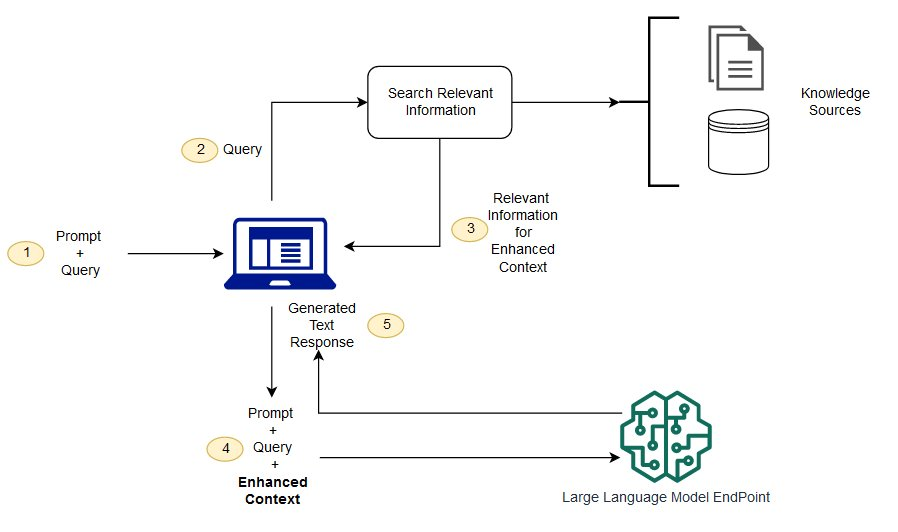
Retrieval Augmented Generation workflow. Image from AWS Sagemaker DocsLLMs, despite their sophistication, still fall short when it comes to tasks like performing math calculations or executing code. A model won’t be able to solve complex mathematical equations or compile and run a piece of Python code without some external help.
This is where “Tools” come to the rescue, it is another key concept related to LLMs. This involves connecting the LLM to external programs by exposing their API interface within the input context. LLM can call these tools to perform the specialized tags by writing API calls which are executed as part of the generation process.
A prime example of this concept in action is ChatGPT plugins, which enhances the capabilities of ChatGPT by allowing it to reach out to a suite of community-made plugins. Similarly, Langchain is a more developer-focused platform, that creates API abstractions and pre-built blocks to incorporate this functionality into your application.
Extending the reach of LLMs even further is the integration of multiple modalities, such as vision and audio. These components convert inputs like images or sound into latent representations, a universal language that our LLM understands.
CLIP, a breakthrough technology from OpenAI, revolutionized the way we bridge the gap between text and images. Similarly, GPT-4V(ision) and Large Language and Vision Assistant (LLaVA) expand the capabilities of LLMs to comprehend and reason over images.
Chat and Agents
We have all become familiar with LLMs through user-friendly interfaces like ChatGPT. Traditionally, LLMs provide a single answer as a completion to the input provided. However, various variants are fine-tuned or use prompt engineering to respond in a chat format, allowing for these interactive conversations.
To address the limitation of LLMs being limited to single-turn conversations, AI agents are designed as systems consisting of multiple LLM agents, each instructed with their specific task. These agents communicate with each other over a chat interface, moderated by AI. By working together, these LLM agents form a collaborative machine that can work towards completing a certain task.
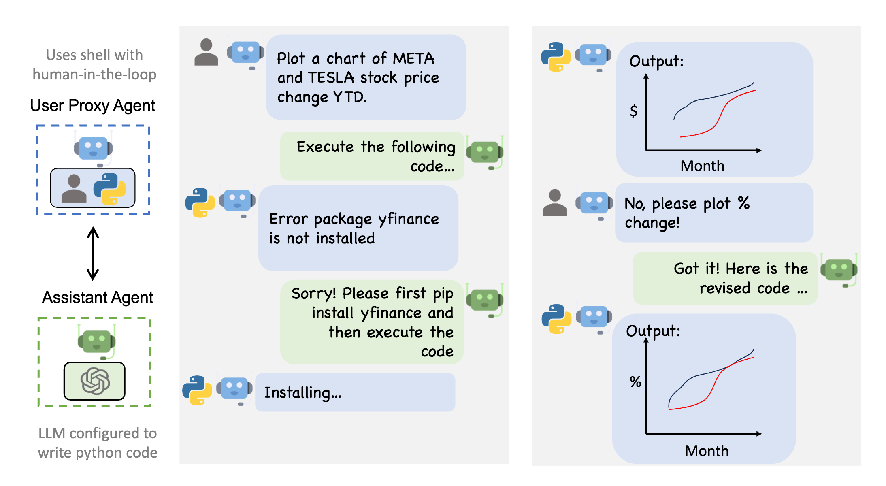
An example of a conversation flow between a python code execution agent, progamming agent and the user. (From AutoGen)This concept is explored in-depth in the article Introduction to Autonomous Agents in AI. This collaborative approach has been implemented in projects like ChatDev, which in true spirit of Conway’s law models agents as a company designed to tackle specific tasks, and Autogen by Microsoft, which provides developer tools to create your agent-based applications.
Your Own Tasks
There may be instances where you find that LLMs are not producing satisfactory results for your specific task. However, there are several strategies you can employ to address this.
One simple trick can be to rephrase your task. The choice of phrasing has a significant influence on how the model responds. Similarly, applying prompt engineering techniques, like few-shot prompting by providing some examples, can prove useful, giving the model hints about what kind of output you’re hoping for.
You can also experiment with different completion regimens such as introducing human-in-the-loop agents. This approach mixes AI-generated completions with human guidance to ensure the outputs align with your expectations.
Conclusion
We’ve covered a lot of ground in this blog series on large language models. By now, you should have a solid grasp of the key concepts underlying LLMs - their inputs, how to apply them for different tasks, and their capabilities.
I hope you’ve found this exploration illuminating. If you’re eager to go deeper into any of the concepts we’ve discussed, I’ve included some additional resources below. Feel free to check those out while I work on the next installments.
If you have any other questions as you continue your LLM journey, don’t hesitate to reach out. I’m always happy to help explain concepts or provide guidance on applying LLMs in business contexts. Whether you need help building an LLM pipeline from scratch, measuring impact and ROI, scaling them up for production, or determining the best use cases for your needs, I’m here. LLMs are powerful tools, but it takes thoughtful implementation to unlock their full potential.
Resources
- Start building RAG systems on AWS:
- Start building multimodal applications:
- Awesome LLM Tools:
- Start Building Autonomous LLM Applications:
- [GitHub - OpenBMB/ChatDev: Create Customized Software using Natural Language Idea (through LLM-powered Multi-Agent Collaboration)](https://github.com/OpenBMB/ChatDev
- GitHub - microsoft/autogen: Building LLM Agent Applications
- Work on your prompts: Prompt Engineering Guide